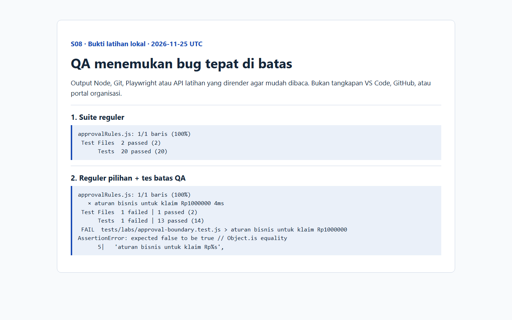

S08 · Level 3 — Tim virtual
QA menemukan bug tepat di batas
QA Engineer menurunkan tiga input dari aturan bisnis dan melaporkan hasil; perubahan produksi milik implementer.
Status latihan: Live ditunda · PR tes QA perlu koreksi guardrail. Ikuti langkah · Ulangi dari awal.
Masalah yang dihadapi
Sari perlu tahu apakah Rp1.000.000 sudah meminta keputusan Finance.
Kerugian: Klaim di batas bisa melewati tahap persetujuan yang seharusnya.
Masalah pada baseline
src/services/approvalRules.js
Lihat potongan atau catatan sumber
return amount > 1_000_000; // aturan yang benar: ≥.Solusi dan alur
QA Engineer menurunkan tiga input dari aturan bisnis dan melaporkan hasil; perubahan produksi milik implementer.
- Ukur suite reguler. Jalankan Vitest coverage. Catat baris approvalRules.js saja, bukan coverage seluruh aplikasi. Bandingkan hasil dengan tabel di bawah; cakupan baris tinggi bukan jaminan batas benar.
- Tambahkan tiga nilai batas lewat fixture. Di PowerShell ubah QA_BOUNDARY menjadi 1. Expected Finance: false, true, true. Tes tengah gagal karena src/services/approvalRules.js memakai >, sementara aturan bisnis memakai ≥. Hapus kembali flag sesudahnya.
- Delegasikan laporan QA, bukan patch produksi. Di GitHub Copilot Agents pilih qa-engineer. Minta PR tests/ saja dan issue “Bug: batas approval Rp1.000.000”. Pada Files changed tolak perubahan ke src/. Ini belum dilakukan live.
Langkah demo
Ukur suite reguler
Jalankan Vitest coverage. Catat baris approvalRules.js saja, bukan coverage seluruh aplikasi. Bandingkan hasil dengan tabel di bawah; cakupan baris tinggi bukan jaminan batas benar.
npm run coverage
Perbesar S08-local-result.pngOutput lokal yang dirender · bukan layar portal · Output pemeriksaan lokal S08: Suite reguler; Reguler pilihan + tes batas QA. Tambahkan tiga nilai batas lewat fixture
Di PowerShell ubah QA_BOUNDARY menjadi 1. Expected Finance: false, true, true. Tes tengah gagal karena src/services/approvalRules.js memakai >, sementara aturan bisnis memakai ≥. Hapus kembali flag sesudahnya.
$env:QA_BOUNDARY='1'; npm run coverage Remove-Item Env:QA_BOUNDARYDelegasikan laporan QA, bukan patch produksi
Di GitHub Copilot Agents pilih qa-engineer. Minta PR tests/ saja dan issue “Bug: batas approval Rp1.000.000”. Pada Files changed tolak perubahan ke src/. Ini belum dilakukan live.
Uji approvalRules.js sesuai docs/business-rules.md. Tulis tes di bawah, tepat pada, dan di atas Rp1.000.000. Laporkan bug; jangan edit produksi. Perbesar S08-01-agent-picker.png
Perbesar S08-01-agent-picker.pngSumber GitHub · Di Agents, klik ikon Copilot di bawah kotak prompt untuk membuka Custom agents. QA Engineer muncul di daftar. Foto ini hanya menunjukkan pilihan; sesi QA belum dijalankan.

Sebelum dan sesudah
S08-before.pngS08-after.png| Bagian | Sebelum | Sesudah / target |
|---|---|---|
| Perilaku | Suite reguler melewati baris approvalRules.js tetapi tidak menguji tepat Rp1.000.000. | Tes batas memakai nilai 999999, 1000000, 1000001. Hanya input tengah gagal: expected true, actual false. |
| Bukti visual | Belum direkam. | Belum direkam. |
| Keputusan | Peserta membaca keadaan awal. | Manusia memeriksa hasil sebelum meneruskan. |
C3 · Coverage baris approvalRules.js
| Kategori | Coverage (%) |
|---|---|
| Suite validasi | 100 |
| Ditambah tes batas | 100 |
Manfaat
- QA mengubah aturan tertulis jadi bukti yang bisa diulang.
Bukti dan sumber
Template issue S08 · Data latihan dan pengukuran.
Bukti GitHub live
Foto menu menunjukkan QA Engineer tersedia, bukan bukti PR atau issue dibuat.
Perbesar S08-01-agent-picker.png3 layar yang belum direkam
S08-before.pngS08-02-bug-issue.pngS08-after.png
Ulangi latihan
Pemeriksaan tidak menulis kode atau data remote. Ulangi perintah di terminal baru bila sebelumnya mengubah variabel lingkungan.
npm run reset -- --fresh